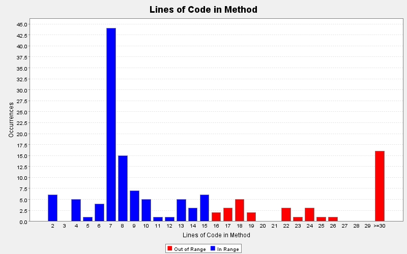

Produced by State Of Flow Eclipse Metrics on Sun Apr 14 20:24:37 EDT 2013
|  |
|
| CC | FE | LOCm | NLS | NOL | NOP | NOS | Line | Method | Type | Package |
|---|---|---|---|---|---|---|---|---|---|---|
| 38 | 0 | 200 | 0 | 6 | 1 | 150 | 1100 | actionPerformed(java.awt.event.ActionEvent) | TwitterGUI | view |
| 5 | 0 | 141 | 0 | 2 | 0 | 84 | 797 | createMessagesPanel() | TwitterGUI | view |
| 3 | 0 | 132 | 0 | 2 | 0 | 97 | 605 | createTweetPanel() | TwitterGUI | view |
| 2 | 0 | 109 | 0 | 2 | 0 | 82 | 89 | makePanel() | ProfilePanel | view |
| 4 | 0 | 101 | 0 | 3 | 0 | 72 | 486 | createFollowingPanel() | TwitterGUI | view |
| 4 | 0 | 93 | 0 | 3 | 0 | 63 | 392 | createFollowersPanel() | TwitterGUI | view |
| 4 | 0 | 70 | 0 | 3 | 0 | 43 | 939 | createAddFollowingPanel() | TwitterGUI | view |
| 4 | 0 | 68 | 20 | 4 | 2 | 68 | 199 | createDescriptionPanel(javax.swing.JPanel, java.awt.GridBagConstraints) | ProfilePanel | view |
| 9 | 2 | 67 | 0 | 5 | 0 | 45 | 323 | setUpController() | TwitterGUI | view |
| 1 | 0 | 66 | 0 | 1 | 0 | 50 | 1010 | createMenu() | TwitterGUI | view |
| 2 | 0 | 58 | 0 | 2 | 0 | 39 | 738 | createTimelinePanel() | TwitterGUI | view |
| 9 | 0 | 55 | 4 | 4 | 0 | 59 | 95 | refresh() | TwitterModel | model |
| 3 | 0 | 51 | 2 | 3 | 0 | 41 | 271 | TwitterGUI() | TwitterGUI | view |
| 1 | 0 | 35 | 0 | 1 | 0 | 22 | 28 | LoadingPanel() | LoadingPanel | view |
| 1 | 0 | 31 | 0 | 1 | 2 | 13 | 40 | DialogTweets(javax.swing.JFrame, model.Tweets) | DialogTweets | view |
| 8 | 0 | 30 | 0 | 3 | 1 | 26 | 1310 | keyTyped(java.awt.event.KeyEvent) | TwitterGUI | view |
| 1 | 0 | 26 | 0 | 1 | 2 | 14 | 268 | getCountButton(int, java.lang.String) | ProfilePanel | view |
| 4 | 0 | 25 | 1 | 2 | 1 | 15 | 151 | refreshImage(twitter4j.User) | TwitterModel | model |
| 3 | 0 | 24 | 3 | 3 | 0 | 16 | 73 | TwitterController() | TwitterController | controller |
| 2 | 0 | 24 | 3 | 2 | 1 | 14 | 370 | addToFile(twitter4j.auth.AccessToken) | TwitterController | controller |
| 5 | 0 | 24 | 0 | 3 | 1 | 17 | 315 | actionPerformed(java.awt.event.ActionEvent) | ProfilePanel | view |
| 3 | 0 | 23 | 1 | 2 | 1 | 24 | 65 | ProfilePanel(twitter4j.User) | ProfilePanel | view |
| 2 | 0 | 22 | 3 | 2 | 2 | 15 | 293 | tweetImage(java.io.File, java.lang.String) | TwitterModel | model |
| 4 | 0 | 22 | 0 | 4 | 1 | 25 | 111 | search(java.lang.String) | Users | model |
| 1 | 0 | 22 | 0 | 1 | 0 | 15 | 1077 | createTabbedPane() | TwitterGUI | view |
| 4 | 0 | 19 | 1 | 2 | 1 | 11 | 249 | getSmallerProfileImage(long) | TwitterModel | model |
| 2 | - | 19 | 0 | 2 | 1 | 9 | 19 | main(java.lang.String[]) | GUITest | test |
| 2 | 0 | 18 | 4 | 2 | 0 | 9 | 395 | getAccessToken() | TwitterController | controller |
| 2 | 0 | 18 | 4 | 2 | 0 | 9 | 414 | getAccessTokenSecret() | TwitterController | controller |
| 4 | 0 | 18 | 2 | 3 | 0 | 12 | 92 | homeTimeline() | Tweets | model |
| 4 | 0 | 18 | 2 | 3 | 0 | 12 | 111 | userTimeline() | Tweets | model |
| 3 | 0 | 18 | 1 | 3 | 2 | 8 | 134 | searchTwitter(java.lang.String, controller.TwitterController) | Users | model |
| 3 | 0 | 17 | 0 | 3 | 1 | 15 | 85 | remove(int) | Users | model |
| 1 | 0 | 17 | 0 | 1 | 1 | 21 | 47 | ProfilePanel(controller.TwitterController) | ProfilePanel | view |
| 3 | 0 | 17 | 0 | 2 | 1 | 16 | 1348 | mouseClicked(java.awt.event.MouseEvent) | TwitterGUI | view |
| 1 | 0 | 16 | 0 | 1 | 1 | 11 | 45 | getElementAt(int) | Tweets | model |
| 1 | 0 | 16 | 0 | 1 | 1 | 9 | 588 | displayUserProfile(twitter4j.User) | TwitterGUI | view |
| 2 | 0 | 15 | 2 | 2 | 1 | 7 | 441 | setUp(java.lang.String) | TwitterController | controller |
| 2 | 0 | 15 | 2 | 2 | 1 | 8 | 507 | follow(long) | TwitterModel | model |
| 3 | 0 | 15 | 1 | 2 | 1 | 9 | 193 | getScreenName(long) | TwitterModel | model |
| 2 | 0 | 15 | 1 | 2 | 2 | 5 | 462 | sendDirectMessage(long, java.lang.String) | TwitterModel | model |
| 2 | 0 | 15 | 1 | 2 | 1 | 7 | 356 | unfollow(long) | TwitterModel | model |
| 2 | 0 | 15 | 1 | 2 | 1 | 6 | 277 | updateStatus(java.lang.String) | TwitterModel | model |
| 2 | 0 | 14 | 1 | 2 | 1 | 6 | 394 | destroyStatus(java.lang.Long) | TwitterModel | model |
| 3 | 0 | 14 | 1 | 2 | 0 | 8 | 478 | getCurrentUserID() | TwitterModel | model |
| 2 | 0 | 14 | 1 | 2 | 1 | 6 | 447 | showDirectMessage(long) | TwitterModel | model |
| 2 | 0 | 13 | 1 | 2 | 1 | 6 | 409 | getTrending(int) | TwitterModel | model |
| 2 | 0 | 13 | 1 | 2 | 1 | 6 | 493 | getUser(long) | TwitterModel | model |
| 2 | 0 | 13 | 1 | 2 | 1 | 6 | 523 | searchUsers(java.lang.String) | TwitterModel | model |
| 2 | 0 | 13 | 1 | 2 | 1 | 6 | 372 | showUser(long) | TwitterModel | model |
Produced by State Of Flow Eclipse Metrics on Sun Apr 14 20:24:37 EDT 2013